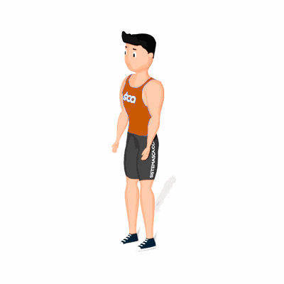

Walking Lunges

É um movimento ótimo para desenvolver a função unilateral e a força das pernas e para reduzir os desequilíbrios musculares, uma vez que trabalhas uma perna de cada vez.
Ficha Técnica
Tipo: CrossFit
Grupo Muscular: Corpo
Aparelho: Nenhum
Músculos: Nenhum
Como realizar
- Fique em pé em uma superfície firme. Seus pés devem ser mantidos separados alguns centímetros;
- Sua parte superior do corpo deve estar na posição inicial e permanecer na posição vertical;
- Pegue o pé direito e dê um passo à frente lentamente. Abaixe os quadris e dobre o joelho direito até que ele esteja posicionado em um ângulo de 90 graus;
- O joelho da frente não deve empurrar o tornozelo e o joelho de trás não deve tocar o chão;
- Garanta que seus movimentos sejam lentos, para que o joelho traseiro não toque o chão;
- Traga o pé traseiro para a frente e dê um passo à frente. Continue a realizar o estocada regular e a avançar da mesma maneira.
 RC STORE
RC STORE